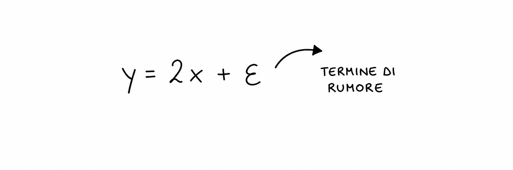
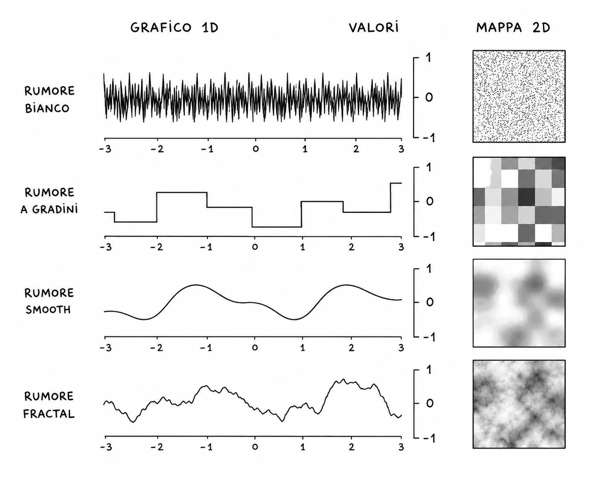
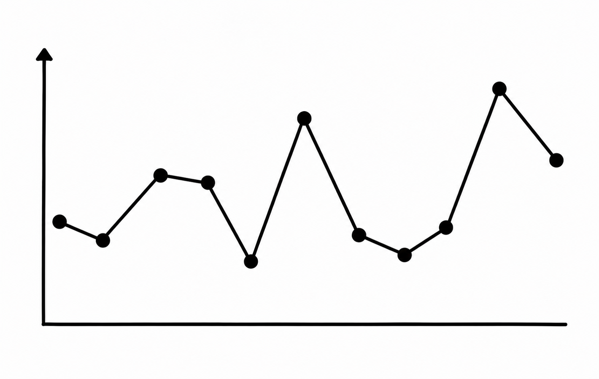
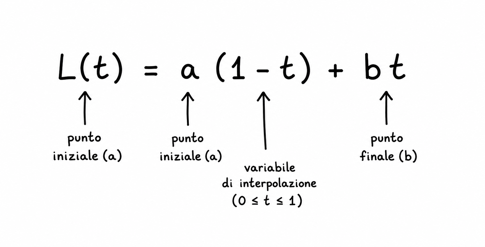
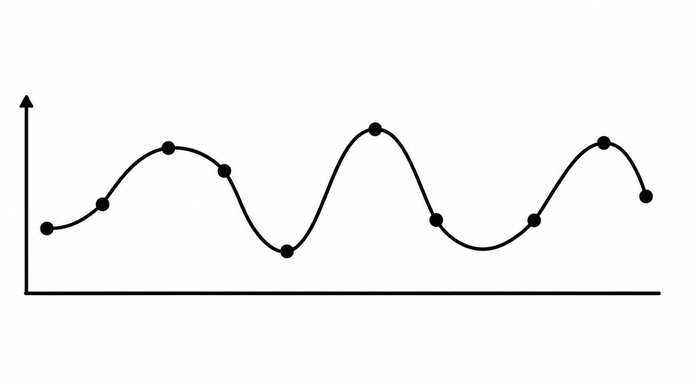
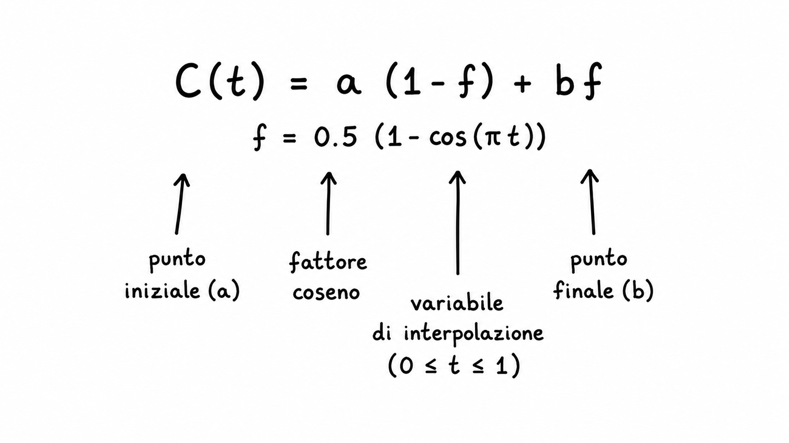

Una ricerca sul rumore procedurale come strumento matematico e visivo: dal random al Perlin Noise, fino alle texture generative e ai paesaggi digitali.
Il noise non è semplice caos. È una variazione controllata, continua e leggibile, capace di generare forme organiche, texture, superfici, pattern e movimenti.
Nel linguaggio comune la parola noise indica un disturbo: rumore sonoro, interferenze elettroniche o imperfezioni visive. Il termine deriva dalla teoria dei segnali e dell’elettronica, dove il “rumore” rappresenta una componente casuale e indesiderata che si sovrappone a un segnale utile.
Nel contesto matematico e computazionale il significato cambia completamente. A partire dagli anni ’70 e ’80, con lo sviluppo della computer grafica, questa idea viene reinterpretata: ciò che prima era considerato errore o disturbo diventa uno strumento utile per generare variazioni controllate e complesse.
Un passaggio fondamentale avviene nel 1983 con il lavoro di Ken Perlin, che sviluppa il Perlin Noise per il film Tron, con l’obiettivo di evitare immagini troppo artificiali e uniformi.
Il noise, a differenza del caso puro (random), produce continuità: valori vicini nello spazio tendono a essere simili.
Il random puro, da solo, non è sufficiente a descrivere questi fenomeni, perché genera variazioni indipendenti e disordinate che non contengono struttura né continuità spaziale.
In questo contesto il noise trova applicazione concreta nella generazione di forme e superfici: viene utilizzato per creare variazioni organiche in geometrie digitali, texture, paesaggi virtuali e sistemi parametrici.
Viene utilizzato in:
Il noise può essere interpretato come una funzione che introduce variazioni controllate all’interno di un sistema, collegandosi al concetto di sistema stocastico.

Per costruire un algoritmo capace di generare noise sufficientemente complesso da risultare utile in ambito grafico, è necessario descrivere una sequenza di metodi che definiscono tipologie di noise via via più sofisticate.

Nella prima riga si osserva il cosiddetto “white noise”: il segnale oscilla in modo completamente imprevedibile e ogni punto è indipendente dagli altri. Si tratta di un rumore ricco di informazione locale ma privo di qualsiasi struttura globale o continuità spaziale. Nella seconda riga il rumore inizia a essere organizzato in intervalli regolari. I valori non cambiano in modo continuo, ma rimangono costanti all’interno di segmenti definiti, creando quindi una struttura “a blocchi”.
In questa fase esiste già una suddivisione spaziale del rumore, ma manca ancora una connessione fluida tra le parti: le discontinuità visibili sono infatti dovute all’assenza di interpolazione tra i valori. Successivamente entra in gioco l’interpolazione, che rappresenta il passaggio chiave verso la continuità. L’interpolazione consiste nel collegare i valori casuali in modo graduale, sostituendo i salti netti con transizioni progressive. In questa fase si passa tipicamente a forme di rumore più evolute come il Value Noise e soprattutto il Perlin Noise, in cui la continuità viene costruita tramite funzioni di interpolazione più morbide e strutturate. Nell’ultima riga il segnale diventa ulteriormente più complesso e realistico. Si osservano variazioni su larga scala combinate con dettagli sempre più fini: questo comportamento emerge dalla sovrapposizione di più livelli di noise a frequenze diverse, chiamati ottave. Questo processo è noto come Fractal Noise, e nella sua forma più comune viene implementato come Fractional Brownian Motion (fBm). Ogni ottava aggiunge dettagli progressivamente più piccoli senza alterare la struttura generale, generando così un risultato finale ricco, coerente e naturale.
L’interpolazione è un concetto fondamentale in matematica, grafica e informatica e serve a costruire valori intermedi tra punti di cui conosciamo già il valore.
In generale, possiamo dire che l’interpolazione è il processo con cui si costruisce una funzione continua a partire da un insieme di punti discreti. In altre parole, invece di avere solo alcuni valori isolati, si crea una regola che permette di calcolare qualsiasi valore compreso tra di essi.
L’idea chiave è questa: si parte da due (o più) valori noti e si definisce il modo in cui avviene il passaggio graduale tra essi. L’interpolazione non inventa valori casuali, ma li calcola seguendo una legge matematica precisa.
Il modo in cui avviene questa transizione determina il tipo di interpolazione e quindi il comportamento visivo del noise.
L’interpolazione lineare è la forma più semplice. Tra due valori il passaggio avviene lungo una linea retta, cioè a velocità costante.
La variazione è uniforme: ogni piccolo passo nello spazio produce lo stesso cambiamento nel valore.
Il risultato è una transizione regolare ma relativamente rigida, in cui il cambiamento di direzione resta visibile nei punti di connessione tra segmenti.


L’interpolazione coseno introduce una curva nel modo in cui si passa da un valore all’altro.
Il cambiamento è più lento all’inizio, accelera nella parte centrale e rallenta nuovamente alla fine.
Il risultato è una transizione più morbida rispetto alla linea retta, perché elimina il cambiamento brusco di pendenza ai bordi.


L’interpolazione cubica è ancora più raffinata e utilizza una funzione polinomiale di terzo grado.
Il passaggio tra i valori non è soltanto continuo nel valore, ma anche nella velocità di cambiamento.
Il risultato è una curva molto fluida, spesso usata in computer grafica e nel Value Noise perché riduce quasi completamente gli artefatti visivi.
All'estremo base della scala strutturale troviamo i rumori privi di coerenza spaziale o temporale. Dal punto di vista della teoria dei segnali, ogni punto di queste matrici è completamente indipendente da quelli adiacenti.
Il termine deriva dall'analogia ottica con la luce bianca, la quale contiene l'intero spettro delle frequenze visibili in eguale misura. Nel calcolatore, generare rumore bianco equivale a lanciare un dado per ogni singolo pixel. L'occhio umano percepisce questo fenomeno come un caos "tagliente" e statico, privo di qualsiasi continuità geometrica. La sua funzione di densità di probabilità è costante:
Dopo il random puro compare una prima organizzazione spaziale del rumore: lo spazio viene suddiviso in intervalli regolari e a ogni intervallo viene assegnato un valore costante.
Il risultato è un rumore strutturato ma ancora discontinuo, spesso definito Value Noise non interpolato o Block Noise, poiché genera una distribuzione “a blocchi” senza transizioni morbide tra regioni adiacenti.
La continuità visiva non è ancora presente, perché manca l’interpolazione matematica tra i valori vicini.
Successivamente entra in gioco l’interpolazione, che rappresenta il passaggio fondamentale verso la continuità spaziale del rumore.
L’interpolazione consiste nel collegare valori casuali adiacenti in modo graduale, sostituendo le discontinuità brusche con transizioni progressive e leggibili.
I valori vengono collegati matematicamente attraverso funzioni di interpolazione. Il risultato è una variazione continua, più adatta alla simulazione di fenomeni naturali.
Sviluppato da Ken Perlin, non interpola direttamente valori casuali ma gradienti distribuiti nello spazio, ottenendo superfici più morbide, organiche e prive di artefatti visivi evidenti.
Grazie a questa continuità controllata, il rumore diventa uno strumento essenziale nella computer grafica, nel design generativo e nella simulazione di texture naturali.
I valori vengono collegati matematicamente attraverso funzioni di interpolazione. Il risultato è una variazione continua, più adatta alla simulazione di fenomeni naturali.
Le animazioni mostrano diverse qualità visive del noise: il caos del white noise, la continuità del value noise, la stratificazione del fBM, le celle del Voronoi, e le forme organiche ispirate al Simplex e al Perlin Noise.